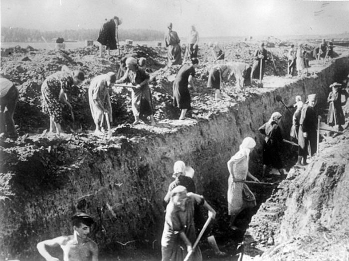

◄ Назад | На главную | Вперед ►

Полное снятие блокады Ленинграда
Оборона на дальних и ближних подступах к Ленинграду.
Преодолев сопротивление советских войск в Прибалтике, немецко-фашистские войска 10 июля 1941 г. развернули наступление на юго-западных подступах к Ленинграду с рубежа реки Великая. С севера в наступление перешли финляндские войска.
В результате упорного сопротивления войск Ленинградского фронта наступление врага ослабевало, и к концу сентября фронт стабилизировался. План врага по захвату Ленинграда с ходу потерпел крах, что имело важное военно-стратегическое значение. Немецкое командование, вынужденное отдать приказ о переходе к обороне под Ленинградом, лишилось возможности повернуть силы группы армий "Север" на московское направление для усиления наступавших там войск группы армий "Центр".
Блокада города Ленинграда.

Советскими войсками неоднократно предпринимались попытки снятия блокады города. В ноябре-декабре 1941 г. были проведены Тихвинская оборонительная и наступательная операции, в 1942 году - в январе-апреле - Любанская и в августе-октябре - Синявинская операции. Успеха они не имели, однако эти активные действия советских войск сорвали готовившийся новый штурм города. С моря Ленинград прикрывал Балтийский флот.
Немецкие войска, осадившие город, подвергали его регулярным бомбардировкам и обстрелам из осадных орудий большой мощности. Несмотря на тяжелейшие условия, промышленность Ленинграда не прекращала свою работу. В тяжелых условиях блокады трудящиеся города давали фронту вооружение, снаряжение, обмундирование, боеприпасы.
Прорыв блокады Ленинграда.
В январе 1943 г. под Ленинградом была проведена стратегическая наступательная операция "Искра". 12 января 1943 г. соединения 67-й армии Ленинградского фронта, 2‑й ударной и части сил 8-й армии Волховского фронта при поддержке 13-й и 14-й воздушных армий, авиации дальнего действия, артиллерии и авиации Балтийского флота нанесли встречные удары на узком выступе между Шлиссельбургом и Синявином.
Полное снятие блокады Ленинграда.
Окончательный разгром немецко-фашистских войск под Ленинградом и полное снятие блокады города произошло в начале 1944 г. В январе - феврале 1944 г. советские войска провели стратегическую Ленинградско-Новгородскую операцию. 14 января войска Ленинградского фронта, взаимодействуя с Балтийским флотом, перешли в наступление с ораниенбаумского плацдарма на Ропшу, а 15 января - от Ленинграда на Красное Село. 20 января после упорных боев наступавшие войска соединились в районе Ропши, ликвидировали петергофско-стрельнинскую группировку противника и продолжали развивать наступление на юго-западном направлении. Командование Волховского фронта приступило к проведению Новгородско-Лужской операции. 20 января был освобожден Новгород. К концу января были освобождены города Пушкин, Красногвардейск, Тосно. 27 января 1944 г. блокада Ленинграда была полностью ликвидирована. В этот день в Ленинграде был дан салют.